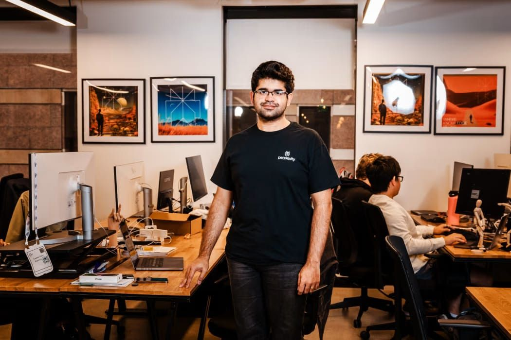

במשך שנים, מודלים של בינה מלאכותית למדו מטקסטים עיתונאיים בלי לשלם עליהם. עכשיו, בפעם הראשונה, אחת מהחברות המובילות בתחום מציעה לש
פורסם במקור ב LinkedIn
במשך שנים, מודלים של בינה מלאכותית למדו מטקסטים עיתונאיים בלי לשלם עליהם. עכשיו, בפעם הראשונה, אחת מהחברות המובילות בתחום מציעה לשנות את כללי המשחק
חברת Perplexity, אחת החלוצות בתחום חיפוש מבוסס AI, הכריזה על תוכנית חדשה שמתחייבת להעביר 42.5 מיליון דולר למו"לים ויוצרים. כן, לשלם, לא להילחם.
הרעיון פשוט: אם התוכן שלך צץ בתוצאות חיפוש, בתוך הדפדפן החדש Comet או בצ'אטבוט של החברה, אתה אמור לקבל תשלום
זה לא פתרון מושלם. התוכנית מבוססת על מנוי חודשי של 5 דולר, שמתוכו 80 אחוז מועבר למו"לים. החישוב עדיין פשוט מדי, הסכומים כנראה לא יכסו מערכות חדשות שלמות, והחלוקה עצמה לא שקופה לגמרי. אבל עצם הניסיון ליצור מודל כלכלי חדש, במקום להסתמך על עקרון השימוש ההוגן, הוא סימן לשינוי גישה
זה קורה על רקע משפטי ברור: Perplexity כבר עומדת בפני תביעות על הפרת זכויות יוצרים מצד Dow Jones, לצד דרישות הסרה מ Condé Nast ו Forbes. ייתכן שהמנוי הזה, כמו Apple News Plus רק לאינטרנט ולבינה מלאכותית, הוא לא רק ניסיון לרצות את התעשייה אלא דרך לייצר לגיטימציה ציבורית ומשפטית לתחום הכל-כך מורכב וחדש הזה.
אבל יש כאן גם רעיון עמוק יותר. ההבנה שקוראים היום הם לא רק בני אדם - אלא גם סוכני בינה מלאכותית. כשמודל AI צורך תוכן לצורך תשובה, הוא מייצר תנועה מסוג חדש, שעד כה לא הייתה לה שום תמורה. ייתכן ש Comet Plus היא רק תחילתה של כלכלה חדשה שבה לא רק קליקים אלא גם שאילתות, הקשרים וציטוטים הופכים ל״מטבע״.
ועדיין יש לא מעט שאלות לענות עליהן, כמו מה יקרה כשהמפרסמים יגלו שהלקוחות שלהם הם בינה מלאכותית ומי יקבל תשלום כשציטוט מועתק בין מודלים
